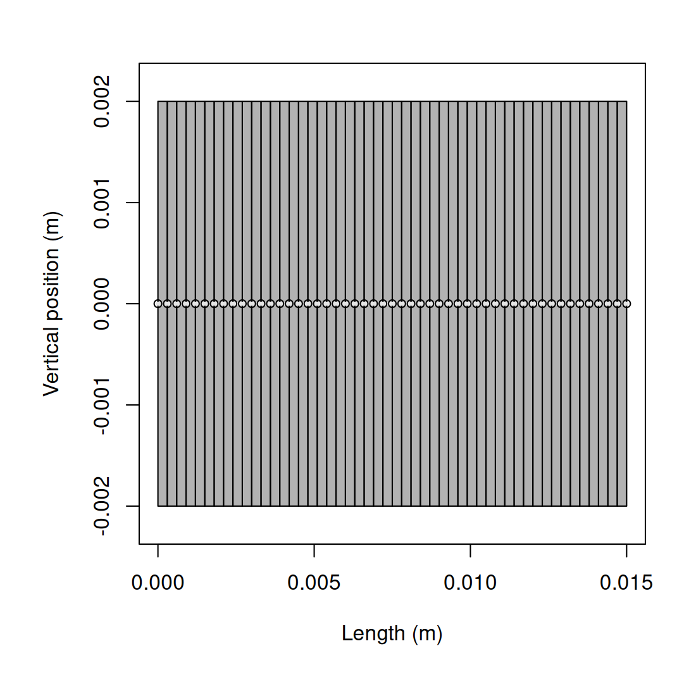
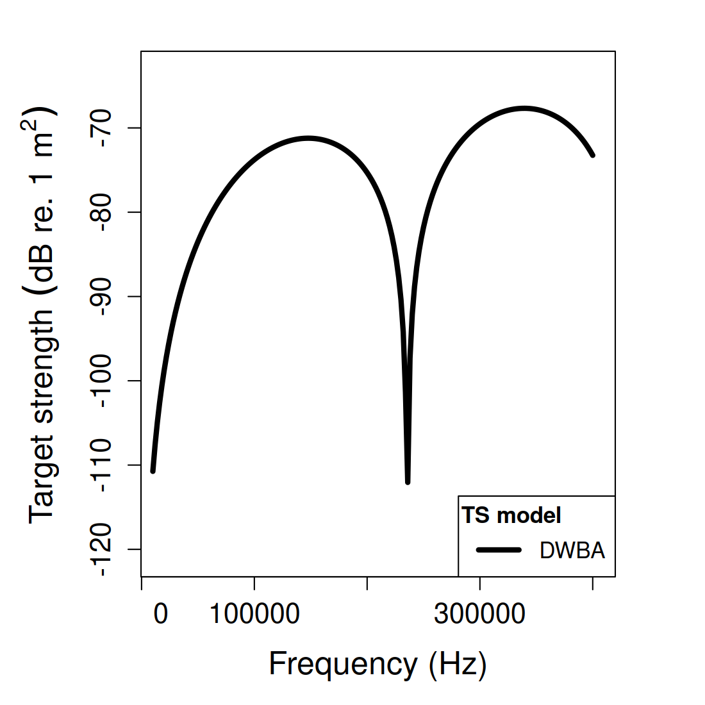
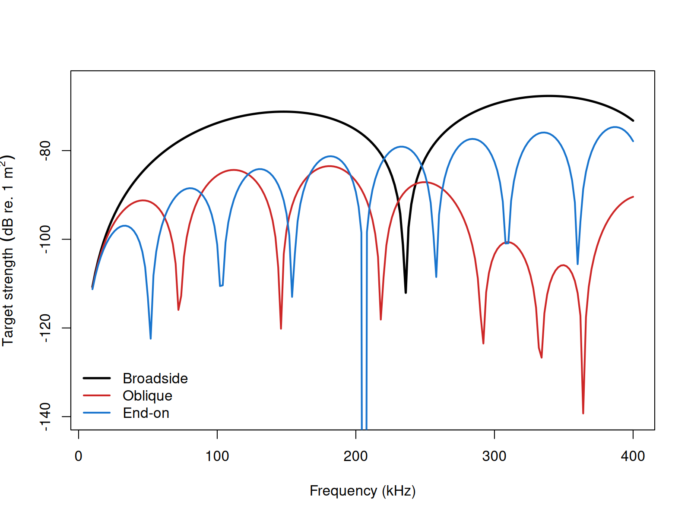

acousticTS implementation
These pages follow the weak-scattering elongated-body formulation and later applied fisheries-acoustics usage of the distorted-wave Born approximation (Morse and Ingard 1968; Chu, Foote, and Stanton 1993).
The acousticTS implementation of deterministic DWBA follows the same
object-based pattern used throughout the package. A fluid-like scatterer
is constructed first, the model is then run through
target_strength(), and the resulting backscattering
quantities are stored back onto the same object. That workflow is
especially useful for the DWBA because the model depends not only on
material contrasts, but also on the discretized body geometry and the
orientation assigned to the object.
Fluid-like scatterer object generation
For deterministic DWBA, the relevant object class is
FLS. The object may be supplied using direct contrasts such
as g_body and h_body, or by supplying absolute
material properties from which the contrasts can be derived relative to
the surrounding medium. The important point is that the target should
remain within the weak-scattering regime for which the DWBA is
intended.
The example below uses a simple cylinder. That geometry is not meant to imply that DWBA is only for cylinders. It is simply a clean way to show how object construction and model execution fit together before moving on to more realistic weakly scattering bodies.
library(acousticTS)
cylinder_shape <- cylinder(
length_body = 15e-3,
radius_body = 2e-3,
n_segments = 50
)
cylinder_scatterer <- fls_generate(
shape = cylinder_shape,
g_body = 1.03,
h_body = 1.03,
theta_body = pi / 2
)
cylinder_scatterer## FLS-object
## Fluid-like scatterer
## ID:UID
## Body dimensions:
## Length:0.015 m(n = 50 cylinders)
## Mean radius:0.002 m
## Max radius:0.002 m
## Shape parameters:
## Defined shape:Cylinder
## L/a ratio:7.5
## Taper order:N/A
## Material properties:
## g: 1.03
## h: 1.03
## Body orientation (relative to transducer face/axis):1.571 radiansThis object contains the geometry, the fluid-like material interpretation, and the orientation needed by the model. That makes it a good starting point for checking whether later differences in output come from frequency, orientation, or material contrast rather than from accidental changes in object setup.
Calculating a target-strength spectrum
Once the FLS object is available, the DWBA model is
called through target_strength() using
model = "dwba". In practice, the first useful run is
usually a short frequency sweep that allows the user to inspect the
overall response before moving on to larger parameter studies.
frequency <- seq(50e3, 200e3, by = 10e3)
cylinder_scatterer <- target_strength(
object = cylinder_scatterer,
frequency = frequency,
model = "dwba"
)This step updates the object so that the model outputs are stored together with the original scatterer definition. That shared object structure is convenient because DWBA results are usually interpreted together with geometry and orientation rather than in isolation.
Inspecting model results
Model results can be inspected visually or accessed directly with
extract(). Both are useful, and they answer slightly
different questions. Plotting is the quickest way to see whether the
geometry and target-strength response are behaving sensibly. Extraction
is the better choice when the results need to be compared across several
runs or moved into a custom analysis workflow.
Plotting results


The shape plot is worth checking even in simple examples because the DWBA is explicitly geometry dependent. A visually reasonable target-strength curve is not a substitute for confirming that the body segmentation, orientation, and overall dimensions are what the user intended.
Accessing results
## frequency ka f_bs sigma_bs TS
## 1 5e+04 0.4188790 -6.695681e-05-1.250513e-20i 4.483214e-09 -83.48411
## 2 6e+04 0.5026548 -9.285285e-05-2.080990e-20i 8.621652e-09 -80.64410
## 3 7e+04 0.5864306 -1.208013e-04-3.158589e-20i 1.459295e-08 -78.35857
## 4 8e+04 0.6702064 -1.496321e-04-4.471345e-20i 2.238976e-08 -76.49951
## 5 9e+04 0.7539822 -1.781092e-04-5.987594e-20i 3.172289e-08 -74.98627
## 6 1e+05 0.8377580 -2.049726e-04-7.656305e-20i 4.201375e-08 -73.76609The DWBA output includes the working frequency grid, the
acoustic-size variable ka, the backscattering length
f_bs, the backscattering cross-section
sigma_bs, and target strength TS. Those
quantities are related in the standard way:
\sigma_{\mathrm{bs}} = |f_{\mathrm{bs}}|^2, \qquad \mathit{TS} = 10 \log_{10}\left(\sigma_{\mathrm{bs}}\right).
That relationship is useful to keep in mind when comparing deterministic DWBA results with stochastic or orientation-averaged outputs, because averages should generally be taken in linear space before being reported in dB.
Comparison workflows
Orientations
For elongated weak scatterers, orientation is often as important as the material contrasts. A quick orientation sweep is therefore one of the most informative first diagnostics. It reveals whether the body behaves in the broadside-dominated way expected for an elongated target and whether the frequency response changes through interference and projection effects as the viewing angle changes.

This kind of comparison is useful because it shows how strongly the DWBA response is controlled by coherent summation along the body. Broadside, oblique, and end-on views do not simply rescale the same curve. They can also shift the pattern of constructive and destructive interference.
Bundled biological target
Once the simple cylinder workflow is comfortable, the next useful step is usually to apply the same pattern to a more realistic weakly scattering body. In that setting, the practical questions are the same as in the simple example: is the object still within the weak-scattering regime, is the centerline geometry sensible, and is the chosen orientation convention the one intended for the scientific question?
The bundled krill object is a useful next step because
it provides a more biologically motivated geometry while still fitting
naturally into the same DWBA workflow.
Published reference comparisons
The comparison below uses those canonical targets directly as reported in Jech et al. (2015). Elapsed times are representative values from the current machine.
| Geometry | Max abs. \Delta vs benchmark (dB) | Mean abs. \Delta vs benchmark (dB) | Elapsed (s) |
|---|---|---|---|
| Weakly scattering sphere | 16.17744 | 0.29031 | 0.74 |
| Weakly scattering prolate spheroid | 0.04993 | 0.01735 | 5.11 |
| Weakly scattering cylinder | 2.28194 | 0.06664 | 2.53 |
Those values still need to be read carefully. The largest absolute \Delta TS values are concentrated near deep nulls, so the sphere and cylinder maxima are driven by a small number of frequencies rather than by a uniform offset across the full sweep.
Bundled krill compatibility check
The bundled krill object serves a different role from
the canonical modal-series targets above. Rather than testing an exact
canonical-shape solution, it is used to verify that the stored
segmented-body geometry reproduces the MATLAB code provded
by McGehee, O’Driscoll, and Traykovski (1998) and echoSMs (Elavia
2021).
| Comparison | Mean abs. \Delta TS (dB) | Max abs. \Delta TS (dB) |
|---|---|---|
| acousticTS vs McGehee et al. (1998) | 1.23e-05 | 4.33e-05 |
| acousticTS vs echoSMs | 0.42284 | 1.01167 |
| McGehee et al. (1998) vs echoSMs | 0.42284 | 1.01167 |
On this bundled krill geometry, acousticTS reproduces McGehee, O’Driscoll, and Traykovski (1998) essentially exactly, while the echoSMs remains within about 1 dB of the same spectrum but does not collapse onto the published curve. That makes the canonical modal-series table above and the bundled krill comparison complementary: one checks exact isolated-shape behavior, and the other checks a published segmented-body DWBA target.